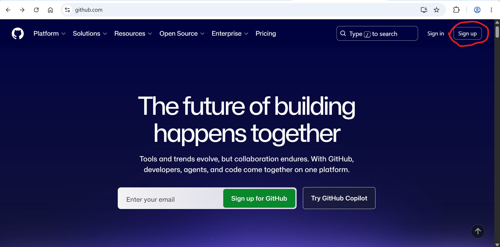
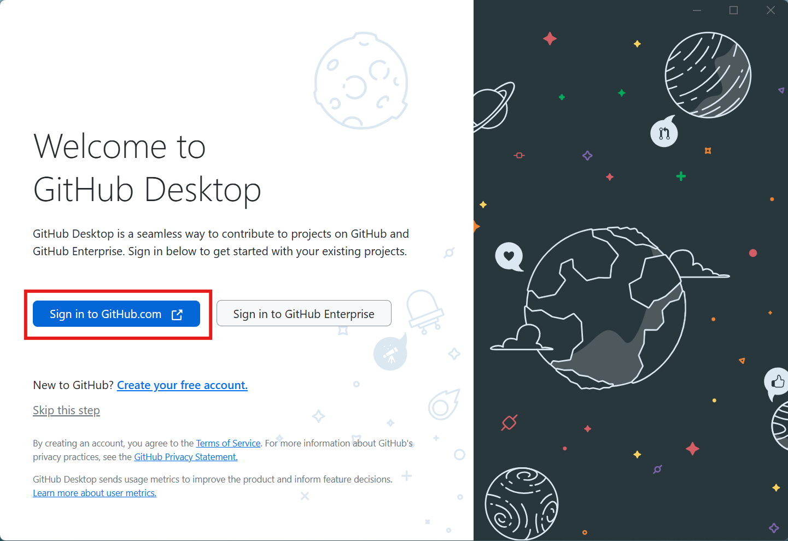
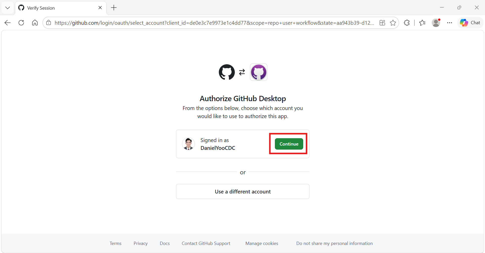

Hub Setup
hub-setup.RmdHosting a Forecasting Hub with GitHub
A forecasting hub is a centralized data portal that supports weekly forecasting activities. In this workshop, we use the Hubverse ecosystem to build a forecasting hub that lives in GitHub. The hub stores and archives both training data and forecast outputs, and it supports weekly forecast report generation from those files.
Our goal here is to set up a hub for a single person running the forecasting workflow. Because it is built within the Hubverse ecosystem, however, the same hub can be extended into a collaborative, multi-team hub and paired with a dashboard, all with minimal changes to what you build today.
Prerequisites
We will create a forecasting hub during the workshop. Please complete the following steps before the workshop.
1. Create or Open Your GitHub Account
Follow these instructions to create a GitHub account. A free account is all you need.

2. Install GitHub Desktop
GitHub Desktop is a graphical application for interacting with Git and GitHub. It simplifies version control tasks, making it easier to manage repositories and track changes without using the command line.
First, download GitHub Desktop. Once it is installed on your machine, open the application and sign in with the GitHub account you created in Step 1.

Next, authorize GitHub Desktop to access your GitHub account.

3. Download the Hub Setup Files
Download hub-setup-files.zip from the Downloads page.
The ZIP contains the Hubverse time-series data, four previous forecast output files, the Quarto weekly report, and the GitHub Actions workflow configuration.
After downloading, unzip the archive and keep the extracted files together in one folder. On Windows, right-click the ZIP file and choose Extract All; on macOS, double-click the ZIP file.